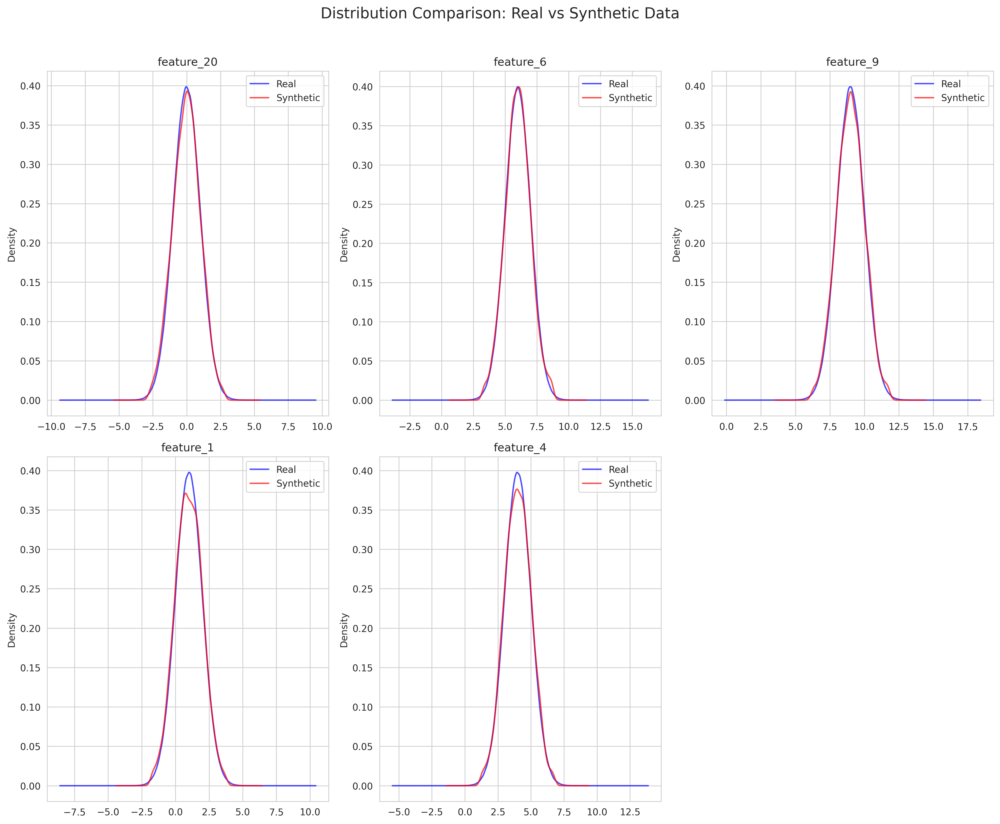
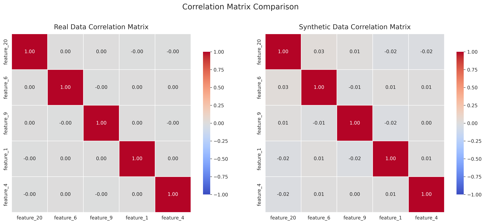

Dataset Overview
| Metric |
Real Data |
Synthetic Data |
| Number of rows |
1000000 |
5000 |
| Number of columns |
21 |
21 |
| Memory usage |
160.22 MB |
0.80 MB |
Generator Information
Method: gaussian, Samples: 5000, Random State: None
Overall Quality Metrics
| Metric |
Value |
Interpretation |
| real_data_size |
5000.0000 |
Acceptable |
| synthetic_data_size |
5000.0000 |
Acceptable |
| size_ratio |
1.0000 |
Acceptable |
| num_numerical_columns |
20.0000 |
Acceptable |
| num_categorical_columns |
0.0000 |
Acceptable |
| avg_ks_statistic |
0.0207 |
Distributions are very similar |
| avg_jensen_shannon_dist |
0.0574 |
Acceptable |
| avg_mean_relative_error |
1.0494 |
Poor |
| avg_std_relative_error |
0.0120 |
Excellent |
| correlation_mean_difference |
0.0168 |
Excellent |
| correlation_max_difference |
0.0673 |
Excellent |
| privacy_risk |
0.0000 |
Acceptable |
| utility_score |
0.9813 |
Excellent |
| statistical_similarity |
0.9813 |
Acceptable |
| privacy_score |
1.0000 |
Excellent |
| quality_score |
0.9859 |
Excellent |
Numerical Column Metrics
Column: feature_1
| Metric |
Value |
| mean_real |
1.0114 |
| mean_synthetic |
0.9798 |
| mean_relative_error |
0.0312 |
| std_real |
0.9975 |
| std_synthetic |
1.0062 |
| std_relative_error |
0.0087 |
| min_real |
-2.9406 |
| min_synthetic |
-1.7154 |
| max_real |
4.3052 |
| max_synthetic |
3.7152 |
| Kolmogorov-Smirnov statistic |
0.0256 |
| Kolmogorov-Smirnov p-value |
0.0755 |
| Jensen-Shannon distance |
0.0560 |
Column: feature_2
| Metric |
Value |
| mean_real |
1.9903 |
| mean_synthetic |
2.0259 |
| mean_relative_error |
0.0179 |
| std_real |
0.9985 |
| std_synthetic |
1.0227 |
| std_relative_error |
0.0242 |
| min_real |
-2.0518 |
| min_synthetic |
-0.6799 |
| max_real |
5.4045 |
| max_synthetic |
4.7202 |
| Kolmogorov-Smirnov statistic |
0.0310 |
| Kolmogorov-Smirnov p-value |
0.0164 |
| Jensen-Shannon distance |
0.0624 |
Column: feature_3
| Metric |
Value |
| mean_real |
3.0017 |
| mean_synthetic |
2.9782 |
| mean_relative_error |
0.0078 |
| std_real |
1.0116 |
| std_synthetic |
1.0017 |
| std_relative_error |
0.0098 |
| min_real |
-0.6137 |
| min_synthetic |
0.3288 |
| max_real |
6.7020 |
| max_synthetic |
5.6878 |
| Kolmogorov-Smirnov statistic |
0.0236 |
| Kolmogorov-Smirnov p-value |
0.1235 |
| Jensen-Shannon distance |
0.0611 |
Column: feature_4
| Metric |
Value |
| mean_real |
4.0199 |
| mean_synthetic |
3.9990 |
| mean_relative_error |
0.0052 |
| std_real |
0.9967 |
| std_synthetic |
0.9998 |
| std_relative_error |
0.0031 |
| min_real |
0.0405 |
| min_synthetic |
1.2978 |
| max_real |
7.4407 |
| max_synthetic |
6.7042 |
| Kolmogorov-Smirnov statistic |
0.0258 |
| Kolmogorov-Smirnov p-value |
0.0717 |
| Jensen-Shannon distance |
0.0578 |
Column: feature_5
| Metric |
Value |
| mean_real |
4.9937 |
| mean_synthetic |
4.9726 |
| mean_relative_error |
0.0042 |
| std_real |
1.0020 |
| std_synthetic |
0.9862 |
| std_relative_error |
0.0157 |
| min_real |
1.7368 |
| min_synthetic |
2.3074 |
| max_real |
8.7464 |
| max_synthetic |
7.6629 |
| Kolmogorov-Smirnov statistic |
0.0166 |
| Kolmogorov-Smirnov p-value |
0.4962 |
| Jensen-Shannon distance |
0.0584 |
Column: feature_6
| Metric |
Value |
| mean_real |
5.9851 |
| mean_synthetic |
5.9924 |
| mean_relative_error |
0.0012 |
| std_real |
1.0065 |
| std_synthetic |
0.9958 |
| std_relative_error |
0.0106 |
| min_real |
2.8888 |
| min_synthetic |
3.3037 |
| max_real |
10.0271 |
| max_synthetic |
8.6855 |
| Kolmogorov-Smirnov statistic |
0.0138 |
| Kolmogorov-Smirnov p-value |
0.7279 |
| Jensen-Shannon distance |
0.0551 |
Column: feature_7
| Metric |
Value |
| mean_real |
7.0063 |
| mean_synthetic |
7.0111 |
| mean_relative_error |
0.0007 |
| std_real |
0.9956 |
| std_synthetic |
0.9919 |
| std_relative_error |
0.0038 |
| min_real |
3.5731 |
| min_synthetic |
4.2509 |
| max_real |
10.8216 |
| max_synthetic |
9.7487 |
| Kolmogorov-Smirnov statistic |
0.0136 |
| Kolmogorov-Smirnov p-value |
0.7443 |
| Jensen-Shannon distance |
0.0450 |
Column: feature_8
| Metric |
Value |
| mean_real |
8.0271 |
| mean_synthetic |
7.9892 |
| mean_relative_error |
0.0047 |
| std_real |
1.0018 |
| std_synthetic |
1.0000 |
| std_relative_error |
0.0018 |
| min_real |
4.1780 |
| min_synthetic |
5.2916 |
| max_real |
11.5301 |
| max_synthetic |
10.6822 |
| Kolmogorov-Smirnov statistic |
0.0240 |
| Kolmogorov-Smirnov p-value |
0.1123 |
| Jensen-Shannon distance |
0.0493 |
Column: feature_9
| Metric |
Value |
| mean_real |
8.9935 |
| mean_synthetic |
8.9960 |
| mean_relative_error |
0.0003 |
| std_real |
0.9853 |
| std_synthetic |
1.0054 |
| std_relative_error |
0.0204 |
| min_real |
5.2732 |
| min_synthetic |
6.2616 |
| max_real |
13.6424 |
| max_synthetic |
11.7151 |
| Kolmogorov-Smirnov statistic |
0.0150 |
| Kolmogorov-Smirnov p-value |
0.6272 |
| Jensen-Shannon distance |
0.0472 |
Column: feature_10
| Metric |
Value |
| mean_real |
10.0010 |
| mean_synthetic |
9.9743 |
| mean_relative_error |
0.0027 |
| std_real |
0.9981 |
| std_synthetic |
1.0162 |
| std_relative_error |
0.0181 |
| min_real |
6.1636 |
| min_synthetic |
7.2971 |
| max_real |
13.6625 |
| max_synthetic |
12.6860 |
| Kolmogorov-Smirnov statistic |
0.0310 |
| Kolmogorov-Smirnov p-value |
0.0164 |
| Jensen-Shannon distance |
0.0603 |
Column: feature_11
| Metric |
Value |
| mean_real |
0.0103 |
| mean_synthetic |
-0.0067 |
| mean_relative_error |
1.6486 |
| std_real |
0.9819 |
| std_synthetic |
1.0136 |
| std_relative_error |
0.0323 |
| min_real |
-3.3872 |
| min_synthetic |
-2.7118 |
| max_real |
3.2945 |
| max_synthetic |
2.6932 |
| Kolmogorov-Smirnov statistic |
0.0182 |
| Kolmogorov-Smirnov p-value |
0.3791 |
| Jensen-Shannon distance |
0.0652 |
Column: feature_12
| Metric |
Value |
| mean_real |
0.0063 |
| mean_synthetic |
-0.0021 |
| mean_relative_error |
1.3302 |
| std_real |
0.9918 |
| std_synthetic |
1.0071 |
| std_relative_error |
0.0154 |
| min_real |
-4.0224 |
| min_synthetic |
-2.7307 |
| max_real |
3.5090 |
| max_synthetic |
2.7299 |
| Kolmogorov-Smirnov statistic |
0.0160 |
| Kolmogorov-Smirnov p-value |
0.5442 |
| Jensen-Shannon distance |
0.0625 |
Column: feature_13
| Metric |
Value |
| mean_real |
0.0071 |
| mean_synthetic |
-0.0388 |
| mean_relative_error |
6.4880 |
| std_real |
1.0035 |
| std_synthetic |
1.0118 |
| std_relative_error |
0.0083 |
| min_real |
-3.8858 |
| min_synthetic |
-2.7246 |
| max_real |
3.5545 |
| max_synthetic |
2.6981 |
| Kolmogorov-Smirnov statistic |
0.0262 |
| Kolmogorov-Smirnov p-value |
0.0646 |
| Jensen-Shannon distance |
0.0600 |
Column: feature_14
| Metric |
Value |
| mean_real |
0.0098 |
| mean_synthetic |
-0.0198 |
| mean_relative_error |
3.0296 |
| std_real |
1.0007 |
| std_synthetic |
0.9939 |
| std_relative_error |
0.0067 |
| min_real |
-3.3426 |
| min_synthetic |
-2.6985 |
| max_real |
3.5454 |
| max_synthetic |
2.7008 |
| Kolmogorov-Smirnov statistic |
0.0148 |
| Kolmogorov-Smirnov p-value |
0.6441 |
| Jensen-Shannon distance |
0.0565 |
Column: feature_15
| Metric |
Value |
| mean_real |
0.0125 |
| mean_synthetic |
-0.0341 |
| mean_relative_error |
3.7262 |
| std_real |
0.9834 |
| std_synthetic |
0.9880 |
| std_relative_error |
0.0047 |
| min_real |
-3.4743 |
| min_synthetic |
-2.6793 |
| max_real |
3.6817 |
| max_synthetic |
2.6505 |
| Kolmogorov-Smirnov statistic |
0.0254 |
| Kolmogorov-Smirnov p-value |
0.0794 |
| Jensen-Shannon distance |
0.0644 |
Column: feature_16
| Metric |
Value |
| mean_real |
0.0163 |
| mean_synthetic |
-0.0032 |
| mean_relative_error |
1.1973 |
| std_real |
0.9847 |
| std_synthetic |
1.0084 |
| std_relative_error |
0.0241 |
| min_real |
-3.6038 |
| min_synthetic |
-2.6815 |
| max_real |
3.8011 |
| max_synthetic |
2.6842 |
| Kolmogorov-Smirnov statistic |
0.0260 |
| Kolmogorov-Smirnov p-value |
0.0681 |
| Jensen-Shannon distance |
0.0593 |
Column: feature_17
| Metric |
Value |
| mean_real |
-0.0083 |
| mean_synthetic |
0.0082 |
| mean_relative_error |
1.9836 |
| std_real |
0.9997 |
| std_synthetic |
1.0038 |
| std_relative_error |
0.0041 |
| min_real |
-3.5937 |
| min_synthetic |
-2.6944 |
| max_real |
3.5378 |
| max_synthetic |
2.7197 |
| Kolmogorov-Smirnov statistic |
0.0204 |
| Kolmogorov-Smirnov p-value |
0.2492 |
| Jensen-Shannon distance |
0.0501 |
Column: feature_18
| Metric |
Value |
| mean_real |
-0.0066 |
| mean_synthetic |
-0.0000 |
| mean_relative_error |
0.9938 |
| std_real |
0.9953 |
| std_synthetic |
1.0142 |
| std_relative_error |
0.0190 |
| min_real |
-3.2585 |
| min_synthetic |
-2.7133 |
| max_real |
3.6495 |
| max_synthetic |
2.7052 |
| Kolmogorov-Smirnov statistic |
0.0152 |
| Kolmogorov-Smirnov p-value |
0.6104 |
| Jensen-Shannon distance |
0.0648 |
Column: feature_19
| Metric |
Value |
| mean_real |
-0.0239 |
| mean_synthetic |
-0.0299 |
| mean_relative_error |
0.2513 |
| std_real |
1.0087 |
| std_synthetic |
1.0156 |
| std_relative_error |
0.0068 |
| min_real |
-3.5166 |
| min_synthetic |
-2.7453 |
| max_real |
3.8977 |
| max_synthetic |
2.7826 |
| Kolmogorov-Smirnov statistic |
0.0162 |
| Kolmogorov-Smirnov p-value |
0.5280 |
| Jensen-Shannon distance |
0.0576 |
Column: feature_20
| Metric |
Value |
| mean_real |
-0.0194 |
| mean_synthetic |
-0.0143 |
| mean_relative_error |
0.2639 |
| std_real |
1.0020 |
| std_synthetic |
1.0039 |
| std_relative_error |
0.0018 |
| min_real |
-3.4999 |
| min_synthetic |
-2.6969 |
| max_real |
3.7096 |
| max_synthetic |
2.6889 |
| Kolmogorov-Smirnov statistic |
0.0156 |
| Kolmogorov-Smirnov p-value |
0.5770 |
| Jensen-Shannon distance |
0.0541 |
Data Visualizations
Distributions Comparison

Correlation Matrix Comparison

Data Samples
Real Data Sample
| feature_1 |
feature_2 |
feature_3 |
feature_4 |
feature_5 |
feature_6 |
feature_7 |
feature_8 |
feature_9 |
feature_10 |
feature_11 |
feature_12 |
feature_13 |
feature_14 |
feature_15 |
feature_16 |
feature_17 |
feature_18 |
feature_19 |
feature_20 |
target |
| 1.496714 |
2.169172 |
4.064722 |
2.892840 |
4.815994 |
5.797254 |
7.166571 |
8.017076 |
9.170982 |
11.224528 |
-1.482041 |
-1.018500 |
-0.932771 |
-0.826353 |
-1.723592 |
-0.125932 |
-0.617163 |
1.539637 |
-1.087963 |
0.088477 |
0 |
| 0.861736 |
1.878495 |
2.503287 |
2.230638 |
5.043793 |
6.910803 |
4.794584 |
6.620612 |
7.282231 |
11.759238 |
0.204001 |
-0.111976 |
-0.407683 |
0.350853 |
0.671728 |
-0.570390 |
0.361864 |
1.152902 |
-0.922906 |
1.886183 |
1 |
| 1.647689 |
3.156625 |
3.129260 |
3.662192 |
6.182518 |
7.041890 |
8.527111 |
7.457036 |
7.331238 |
9.905432 |
-0.015285 |
0.004666 |
0.338182 |
0.361589 |
0.869578 |
0.064401 |
1.061850 |
0.279334 |
-1.163943 |
0.194942 |
1 |
| 2.523030 |
2.200086 |
1.520307 |
4.502378 |
4.715680 |
6.397202 |
7.509416 |
6.864638 |
7.684778 |
9.924350 |
-0.912439 |
0.697829 |
0.555014 |
-0.317531 |
-1.301193 |
0.845784 |
0.861390 |
0.887796 |
0.854134 |
1.632714 |
1 |
| 0.765847 |
2.864611 |
2.690153 |
4.443503 |
4.674846 |
6.360989 |
5.466305 |
7.387519 |
9.681952 |
9.737077 |
-3.065458 |
0.371964 |
-0.300118 |
-2.014426 |
1.635533 |
0.322967 |
1.448205 |
0.973339 |
0.975959 |
1.455579 |
1 |
Synthetic Data Sample
| feature_1 |
feature_2 |
feature_3 |
feature_4 |
feature_5 |
feature_6 |
feature_7 |
feature_8 |
feature_9 |
feature_10 |
feature_11 |
feature_12 |
feature_13 |
feature_14 |
feature_15 |
feature_16 |
feature_17 |
feature_18 |
feature_19 |
feature_20 |
target |
| 1.518992 |
2.280989 |
3.594819 |
3.410845 |
5.212015 |
7.896156 |
6.580773 |
8.446839 |
11.058553 |
11.222047 |
-0.393923 |
-1.238649 |
0.070045 |
1.316148 |
0.073937 |
-1.738290 |
1.199503 |
-0.678182 |
1.187001 |
-0.595394 |
0 |
| -1.715395 |
1.913489 |
3.312555 |
4.192052 |
5.126933 |
7.762422 |
7.458058 |
8.166012 |
8.921683 |
11.229277 |
-0.115351 |
1.255421 |
1.010568 |
-0.571307 |
0.369250 |
-0.862211 |
-0.174441 |
-0.206986 |
2.231371 |
0.571459 |
1 |
| 1.579772 |
3.473482 |
1.492334 |
3.505635 |
4.757125 |
4.552958 |
6.432236 |
7.963809 |
9.954497 |
11.515320 |
-1.205237 |
-0.557354 |
-0.817610 |
0.615819 |
-0.647206 |
-0.185883 |
-0.477895 |
0.364325 |
-0.763064 |
1.061379 |
0 |
| 1.533134 |
2.098287 |
3.347948 |
4.276848 |
4.945081 |
6.466236 |
5.739479 |
9.464174 |
9.721130 |
10.457363 |
-0.381159 |
-0.024272 |
0.585142 |
-2.386397 |
1.927152 |
-1.680852 |
-0.170381 |
0.191770 |
-0.186296 |
1.206253 |
1 |
| 2.170034 |
4.056444 |
2.878850 |
4.022390 |
5.178166 |
5.685363 |
7.589177 |
7.555167 |
8.990868 |
9.840012 |
0.158337 |
-1.938236 |
-0.970784 |
-0.744660 |
1.698603 |
1.489564 |
0.995844 |
-0.400714 |
-0.500231 |
1.711941 |
0 |